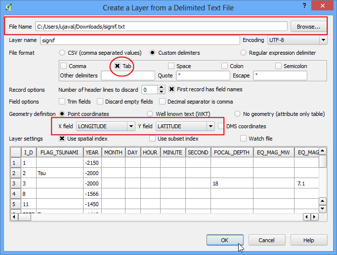
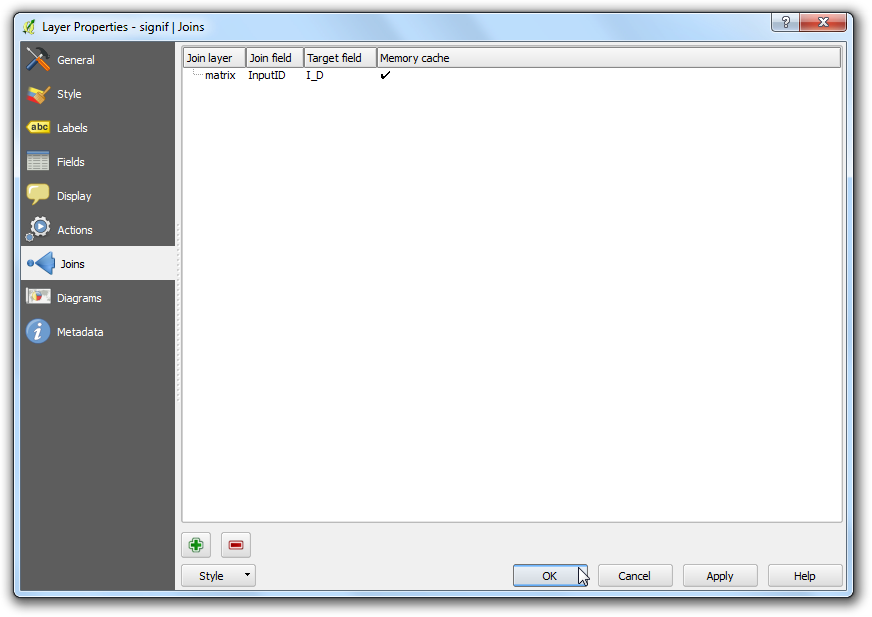
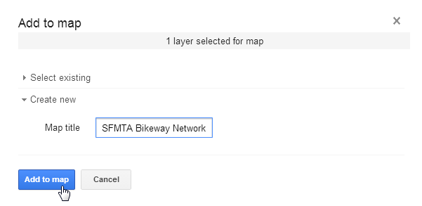

Analyse Nearest Neighbor
[ Download PDF A4 Letter ]
GIS is bijzonder nuttig in het analyseren van ruimtelijke relaties tussen objecten. Eén van zo’n analyse is het uitzoeken welke objecten het dichtst bij een opgegeven object liggen. QGIS heeft een gereedschap genaamd Afstandsmatrix wat helpt bij een dergelijke analyse. In deze handleiding zullen we 2 gegevenssets gebruiken en uitzoeken welke punten van de ene laag het dichtst bij een punt van de tweede laag liggen.
Overzicht van de taak
Gegeven de locaties van alle bekende significante aardbevingen, zoek de dichtstbij gelegen bevolkte plaats voor elke locatie waar de aardbeving plaatsvond.
Andere vaardigheden die u zult leren
Hoe tabellen samen te voegen in QGIS. (Bekijk Samenvoegen van tabellen uitvoeren voor gedetailleerde instructies.)
Querybouwer gebruiken om een subset van objecten uit een laag weer te geven.
Plug-in MMQGIS gebruiken om naaflijnen te visualiseren naar de dichtstbijzijnde buren.
Procedure
Open en blader naar het gedownloade bestand signif.txt.

Kies, omdat dit een tab-gescheiden bestand is, Tab als het Bestandsformaat. De velden X-veld en Y-veld zouden automatisch moeten worden gevuld. Klik op OK.
Notitie
U zou mogelijk enkele foutberichten kunnen zien wanneer QGIS probeert het bestand te importeren. Dit zijn geldige fouten en enkele rijen uit het bestand zullen niet worden geïmporteerd. U mag voor het doel van deze handleiding de fouten negeren.

Omdat de gegevensset met aardbevingen coördinaten in Latitude/Longitude heeft, zal het worden geïmporteerd in het standaard CRS EPSG: 4326. Verifieer dat dat het geval is in de rechter benedenhoek. Laten we ook de laag Populated Places openen. Ga naar .

Blader naar het gedownloade bestand ne_10m_populated_places_simple.zip en klik op Open.

Zoom eens rond en verken beide gegevenssets. Elke paarse punt vertegenwoordigt de locatie van een significante aardbeving en elke blauwe punt vertegenwoordigt de locatie van een bevolkte plaats. We hebben een manier nodig om uit te zoeken waar elk dichtstbijzijnde punt uit de laag met bevolkte plaatsen ligt voor elk van de punten in de laag met aardbevingen.

Ga naar .

Selecteer hier de laag met aardbevingen signif als de Invoer puntenlaag en de bevolkte plaatsen ne_10m_populated_places_simple als de doellaag. U dient ook een uniek veld uit elk van deze lagen te selecteren om te laten zien hoe uw resultaten zullen worden weergegeven. In deze analyse, zoeken naar slechts 1 dichtstbijzijnd punt, selecteer dus Alleen dichtstbijzijnde (k) doelpunten gebruiken, en voer 1 in. Noem uw uitvoerbestand matrix.csv, en klik op OK. Klik op Close als het proces is voltooid.
Notitie
Een nuttig ding om te onthouden is dat u zelfs de analyse kunt uitvoeren met slechts 1 laag. Selecteer dezelfde laag als zowel invoer als doel. Het resultaat zou een dichtstbijzijnde buur zijn van dezelfde laag in plaats van uit een andere laag zoals we hier hebben gebruikt.

Klik, als het proces eenmaal is voltooid, op de knop Close in het dialoogvenster Afstandsmatrix. U kunt nu het bestand matrix.csv in Notepad of een andere tekstbewerker bekijken. QGIS kan ook CSV-bestanden importeren, dus zullen we het toevoegen aan QGIS en het daar bekijken. Ga naar .

Blader naar het nieuw gemaakte bestand matrix.csv. Selecteer, omdat dit bestand slechts tekstkolommen bevat, Geen geometrie (alleen attributentabel) als de Geometrie definitie. Klik op OK.

U zult het CSV-bestand zien geladen als een tabel. Klik met rechts op de tabellaag en selecteer Open attributentabel.

Nu zult u de inhoud van onze resultaten kunnen zien. Het veld InputID bevat de veldnaam uit de laag met aardbevingen. Het veld TargetID bevat de naam uit de laag met Populated Places, die het dichtst bij het punt van de aardbeving ligt. Het veld Distance is de afstand tussen de 2 punten.
Notitie
Onthoud dat de berekening van afstand zal worden uitgevoerd met behulp van het Coördinaten ReferentieSysteem van de lagen. Hier is de afstand in de eenheid decimale garden omdat onze bronlagen in graden zijn. Als u de afstanden in meters wilt, moet u de lagen eerst opnieuw projecteren, vóór het toepassen van het gereedschap.

Dit is nagenoeg het resultaat waar we naar zoeken. Voor sommige gebruikers zou deze tabel voldoende zijn. We kunnen e echter ook deze resultaten integreren in onze originele laag met aardbevingen, met behulp van een Table Join. Klik met rechts op de laag met afbeeldingen en selecteer Eigenschappen.

Ga naar de tab Koppelingen en klik op de knop +.

We willen de gegevens uit ons analyseresultaat koppelen aan deze laag. We moeten een veld met dezelfde waarden selecteren uit elk van de lagen. Selecteer matrix als de Koppellaag` en InputID als het Koppelveld. Het Doelveld is I_D. Laat de andere opties op hun standaard waarden en klik op OK.
U zult de koppeling zien verschijnen op de tab Koppelingen. Klik op OK.

Open nu de attributentabel van de laag signif door er met rechts op te klikken en te selecteren Open attributentabel.

U zult nu zien dat we voor elk object uit de aardbevingen, we nu een attribuut hebben dat de dichtstbijzijnde buur is (dichtstbijzijnde bevolkte plaats) en de afstand tot die dichtstbijzijnde buur.

We zullen nu een manier verkennen om deze resultaten te visualiseren. Eerst moeten we de koppeling van de tabellen permanent maken door die als een nieuwe laag op te slaan. Klik met rechts op de laag signif en selecteer Opslaan als....

Klik op de knop Bladeren naast het label Opslaan als en noem de uitvoerlaag earthquake_with_places.shp. Zorg er voor dat de optie Voeg opgeslagen bestand toe aan kaart is geselecteerd en klik op OK.

Als de nieuwe laag eenmaal is geladen kunt u de zichtbaarheid van de laag signif uitschakelen. Omdat onze gegevensset nogal groot is, kunnen we onze visualisatie-analyse uitvoeren op een deelverzameling van de gegevens. QGIS heeft een aardige mogelijkheid waar u een subset van objecten uit een laag kunt laden zonder die te moeten exporteren naar een nieuwe laag. Klik met rechts op de laag earthquake_with_places en selecteer Eigenschappen.

Scroll, op de tab Algemeen, naar beneden naar het gedeelte Deelverzameling objecten. Klik op Querybouwer.

Voor deze handleiding zullen we de aardbevingen en hun dichtstbijzijnde bevolkte plaatsen voor Mexico visualiseren. Voer de volgende expressie in het dialoogvenster Querybouwer in.

U zult zien dat alleen de plaatsen die binnen Mexico vallen zichtbaar zijn in het kaartvenster. Laten we hetzelfde doen voor de laag met bevolkte plaatsen. Klik met rechts op de laag ne_10m_populated_places_simple en selecteer Eigenschappen.

Open het dialoogvenster Querybouwer op de tab Algemeen. Voer de volgende expressie in.

Nu zijn we klaar om onze visualisatie te maken. We zullen de plug-in, genaamd MMQGIS, gebruiken. Zoek en installeer de plugin. Bekijk Plug-ins gebruiken voor meer details over hoe te werken met plug-ins. Ga, als u de plug-in heeft geïnstalleerd, naar .

Selecteer ne_10m_populated_places_simple als de Hub Point Layer en name als het Hub ID Attribute. Selecteer op dezelfde manier earthquake_with_places als de Spoke Point Layer en matrix_Tar als het Spoke Hub ID Attribute. Het algoritme voor naaflijnen zal door elk van de punten van de aardbevingen gaan en een lijn maken die het verbindt met de bevolkte plaats die overeenkomt met het attribuut dat we jebben gespecificeerd. Klik op Bladeren en noem het Output Shapefile earthquake_hub_lines.shp. Klik op OK om de verwerking te beginnen.

De verwerking kan enkele minuten duren. U kunt de voortgang bekijken in de linker benedenhoek van het venster van QGIS.

Als de verwerking is voltooid zult u de laag earthquake_hub_lines zien geladen in QGIS. U kunt zien dat elke punt van een aardbeving nu een lijn heeft die het verbindt met de dichtstbijzijnde bevolkte plaats.